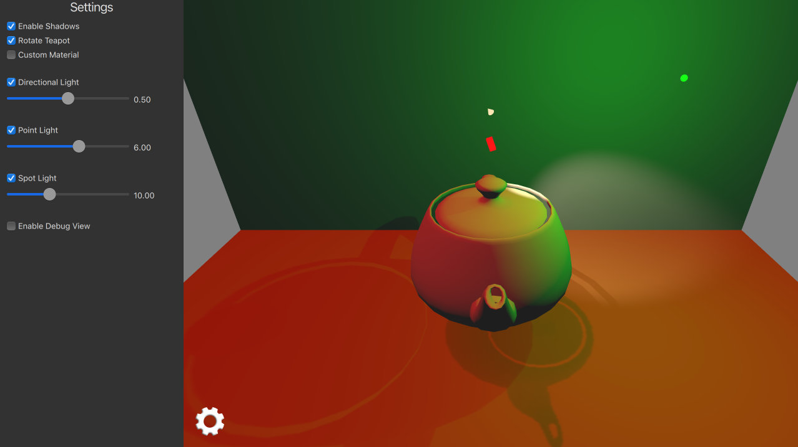

Qt Quick 3D - Lights Example
Demonstrates the use of different light types.

This example demonstrates using three different light types in an application.
Setting the Scene Lights
Directional Light
The directional light emits light in one direction from an unidentifiable source located infinitely far away. This is similar to the way sunlight works in real life. A directional light has infinite range and does not diminish.
We setup directional light to emit red color and animate its rotation around x-axis.
DirectionalLight { id: light1 color: Qt.rgba(1.0, 0.1, 0.1, 1.0) ambientColor: Qt.rgba(0.1, 0.1, 0.1, 1.0) position: Qt.vector3d(0, 200, 0) rotation: Quaternion.fromEulerAngles(-135, -90, 0) shadowMapQuality: Light.ShadowMapQualityHigh visible: directionalLightCheckBox.checked castsShadow: checkBoxShadows.checked brightness: directionalLightSlider.value SequentialAnimation on rotation { loops: Animation.Infinite QuaternionAnimation { to: Quaternion.fromEulerAngles(-45, -90, 0) duration: 2000 easing.type: Easing.InOutQuad } QuaternionAnimation { to: Quaternion.fromEulerAngles(-135, -90, 0) duration: 2000 easing.type: Easing.InOutQuad } } }
Point Light
The point light can be described as a sphere, emitting light with equal strength in all directions from the center of the light. This is similar to the way a light bulb emits light.
We setup point light to emit green color and animate its position in x-coordinate.
PointLight { id: light2 color: Qt.rgba(0.1, 1.0, 0.1, 1.0) ambientColor: Qt.rgba(0.1, 0.1, 0.1, 1.0) position: Qt.vector3d(0, 300, 0) shadowMapFar: 2000 shadowMapQuality: Light.ShadowMapQualityHigh visible: pointLightCheckBox.checked castsShadow: checkBoxShadows.checked brightness: pointLightSlider.value SequentialAnimation on x { loops: Animation.Infinite NumberAnimation { to: 400 duration: 2000 easing.type: Easing.InOutQuad } NumberAnimation { to: 0 duration: 2000 easing.type: Easing.InOutQuad } } }
Spot Light
The spot light is similar to the point light, except that it emits light in a cone shape towards one direction instead of all directions. Aside from the cone angle, a spot light has the same characteristics and properties as the point light.
We setup spot light to emit a warm color and animate its rotation in y-coordinate.
SpotLight { id: light4 color: Qt.rgba(1.0, 0.9, 0.7, 1.0) ambientColor: Qt.rgba(0.0, 0.0, 0.0, 0.0) position: Qt.vector3d(0, 250, 0) eulerRotation.x: -45 shadowMapFar: 2000 shadowMapQuality: Light.ShadowMapQualityHigh visible: spotLightCheckBox.checked castsShadow: checkBoxShadows.checked brightness: spotLightSlider.value coneAngle: 50 innerConeAngle: 30 PropertyAnimation on eulerRotation.y { loops: Animation.Infinite from: 0 to: -360 duration: 10000 } }
Setting the Scene Models
First we add two rectangle models to act as the floor and the back wall for our scene. These are useful for seeing light shadows.
Model { source: "#Rectangle" y: -200 scale: Qt.vector3d(15, 15, 15) eulerRotation.x: -90 materials: [ DefaultMaterial { diffuseColor: Qt.rgba(0.8, 0.6, 0.4, 1.0) } ] } Model { source: "#Rectangle" z: -400 scale: Qt.vector3d(15, 15, 15) materials: [ DefaultMaterial { diffuseColor: Qt.rgba(0.8, 0.8, 0.9, 1.0) } ] }
Then we add our main teapot model which is rotated around y-axis.
Model { id: teapotDefault source: "teapot.mesh" y: -100 scale: Qt.vector3d(75, 75, 75) property variant material materials: [ material ] property bool animate: true NumberAnimation on eulerRotation.y { running: teapotDefault.animate loops: Animation.Infinite duration: 5000 from: 0 to: -360 } }
We also add small cube models to demonstrate position & rotation of each light type. These cubes scale bigger when user is accessing related sliders.
Model { // Directional Light Marker property real size: directionalLightSlider.highlight ? 0.2 : 0.1 source: "#Cube" position: light1.position rotation: light1.rotation scale: Qt.vector3d(size, size, size * 2) materials: [ PrincipledMaterial { baseColor: light1.color lighting: PrincipledMaterial.NoLighting } ] castsShadows: false visible: directionalLightCheckBox.checked } Model { // Point Light Marker source: "#Sphere" position: light2.position rotation: light2.rotation property real size: pointLightSlider.highlight ? 0.2 : 0.1 scale: Qt.vector3d(size, size, size) materials: [ PrincipledMaterial { baseColor: light2.color lighting: PrincipledMaterial.NoLighting } ] castsShadows: false visible: pointLightCheckBox.checked } Node { // Spot Light Marker position: light4.position rotation: light4.rotation property real size: spotLightSlider.highlight ? 0.2 : 0.1 scale: Qt.vector3d(size, size, size) Model { source: "#Cone" castsShadows: false eulerRotation.x: 90 materials: PrincipledMaterial { baseColor: light4.color lighting: PrincipledMaterial.NoLighting } } visible: spotLightCheckBox.checked }
From the settings panel user can then enable shadows and control visibility and brightness of each light separately.
Files:
- lights/CMakeLists.txt
- lights/RotatingTeaPot.qml
- lights/SettingsDrawer.qml
- lights/lights.pro
- lights/main.cpp
- lights/main.qml
- lights/qml.qrc
Images:
{kind=link}
{kind=link}
{kind=link}
{kind=link}